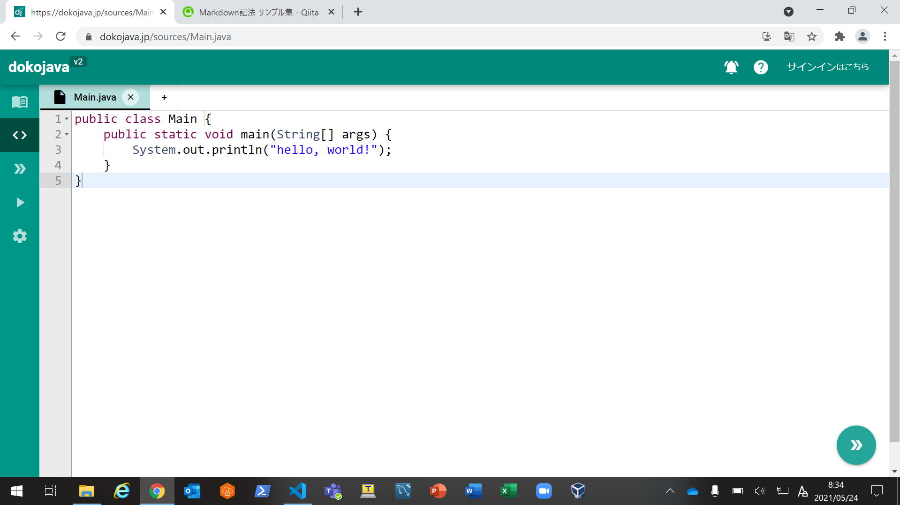
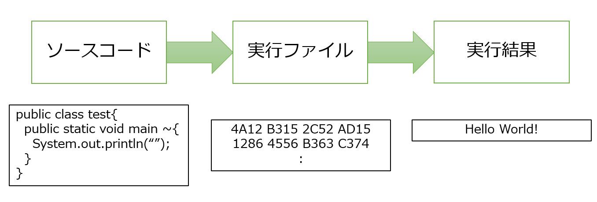

Java入門¶
環境の準備¶
すっきりわかるJava入門をすすめるにあたって実行環境が必要ですが、 難しいことはわからんという人の実行環境はここからお願いします。 わからんけどvscodeでしたいという人は別途聞いてください。
実際にリンクへ飛ぶと、以下のような画面になるので、 とりあえず右下の"" >> ""からコンパイル、実行してみましょう。 実行すると"" hello, world! ""と出力されるはずです。
Javaプログラム（test.javaの場合）
// testというファイルですよ
public class test{
// ひとまずおまじないということで
public static void main(String[] args){
// 改行付きで出力します。
System.out.println("hello, world!");
}
}

プログラムの実行にあたって¶
「さーてJavaでプログラム書いてアプリケーションつくるぞ。」 という前にプログラム実行までの流れを押さえましょう。
実行までの流れ¶
アプリケーションをつくるためには Javaでプログラムを書いたとしてもそこで終わりではなく、 機械が読めるようにコンパイルという翻訳作業が必要です。 そうしてできた実行ファイル(~.exe)を実行することで はじめてプログラムの実行結果が出力されます。

ソースコードの作成¶
ソースコードはおそらくみなさんが思っているプログラム自体のことでC言語であったり、Java言語であったりで記述されます。つまり、人が読みやすいプログラムのことです。
コンパイル¶
ソースコードをもとに実行ファイルを生成します。実行ファイルとは機械が読めるプログラムであり、中身は0/1の羅列となっています。 コンパイルはコンパイラで行われ、この時、文法エラーがあると怒られます。
サイトを使った場合はいりませんが、自分の実行環境をもっているばあいは以下を実行してください。
javac ファイル名.java
これでコンパイルすることができます。コンパイラに怒られたら修正してください。
実行¶
コンパイルによって生成された実行ファイルを実行するにも1ステップあり、ここで登場するのがインタプリタです。実行ファイル内部のバイトコードの変換を行い、ソフトウェアに対し実行を依頼する。Javaの場合はJVMがその仕事をします。
サイトを使った場合はいりませんが、自分の実行環境をもっているばあいは以下を実行してください。
java test
無事に出力されることを願っております。
なんでJava?¶
速度面的にはC言語には及ばないものの十分な実行速度です。いかにアルゴリズムを速くしようが、実行速度に限界はあるためここが速いほうが結果の出力までの時間が短くなる。 また、JVMのおかげでどんな環境においても同様な実行結果を出力可能となります。